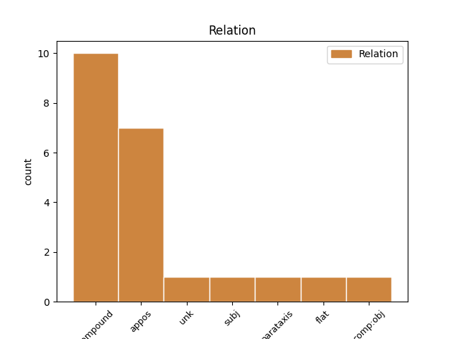
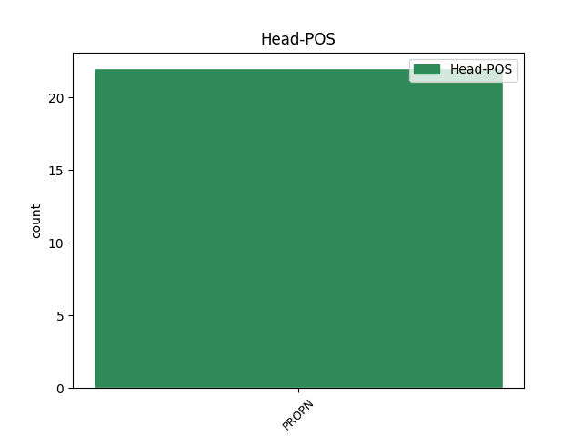
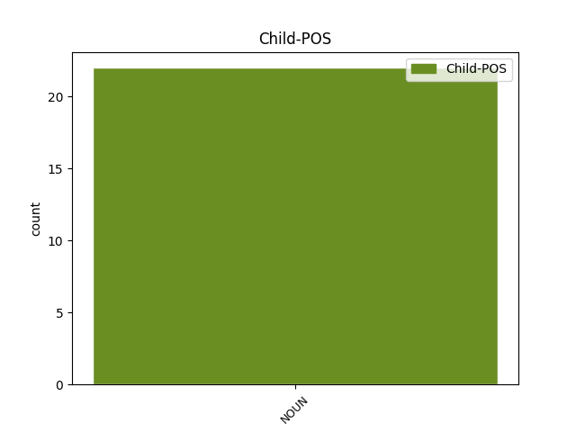

Distribution of features within this leaf



Agreement Rules sorted by frequency.
- When the dependent token is the compound(compound) of the head token, and the head token is PROPN and the dependent token is NOUN.
1 Yr _ _ _ _ 0 _ _ _
2 Unol _ _ _ _ 0 _ _ _
3 Daleithiau _ _ _ _ 0 _ _ _
4 Yn _ _ _ _ 0 _ _ _
5 2000 _ _ _ _ 0 _ _ _
6 , _ _ _ _ 0 _ _ _
7 roedd _ _ _ _ 0 _ _ _
8 3,578,718 _ _ _ _ 0 _ _ _
9 , _ _ _ _ 0 _ _ _
10 sef _ _ _ _ 0 _ _ _
11 3.09 _ _ _ _ 0 _ _ _
12 % _ _ _ _ 0 _ _ _
13 o _ _ _ _ 0 _ _ _
14 stoc _ _ _ _ 0 _ _ _
15 tai _ _ _ _ 0 _ _ _
16 yr _ _ _ _ 0 _ _ _
17 Unol _ PROPN _ Case=NomAcc|Definite=Def|Gender=Fem|Number=Sing 0 _ _ _
18 Daleithiau daleithia NOUN _ Case=NomAcc|Definite=Def|Gender=Fem|Number=Sing 17 compound _ _
19 yn _ _ _ _ 0 _ _ _
20 dai _ _ _ _ 0 _ _ _
21 haf _ _ _ _ 0 _ _ _
22 ac _ _ _ _ 0 _ _ _
23 ail _ _ _ _ 0 _ _ _
24 gartrefi _ _ _ _ 0 _ _ _
25 , _ _ _ _ 0 _ _ _
26 o'i _ _ _ _ 0 _ _ _
27 gymharu _ _ _ _ 0 _ _ _
28 â _ _ _ _ 0 _ _ _
29 2.66 _ _ _ _ 0 _ _ _
30 % _ _ _ _ 0 _ _ _
31 yn _ _ _ _ 0 _ _ _
32 1990 _ _ _ _ 0 _ _ _
33 , _ _ _ _ 0 _ _ _
34 1.87 _ _ _ _ 0 _ _ _
35 % _ _ _ _ 0 _ _ _
36 yn _ _ _ _ 0 _ _ _
37 1980 _ _ _ _ 0 _ _ _
38 . _ _ _ _ 0 _ _ _
1 Ynghyd _ _ _ _ 0 _ _ _
2 a'i _ _ _ _ 0 _ _ _
3 wraig _ _ _ _ 0 _ _ _
4 Chris Chris PROPN _ Case=NomAcc|Gender=Masc|Number=Sing 0 _ _ _
5 , _ _ _ _ 0 _ _ _
6 dyfeisiodd dyfeisiodd NOUN _ Case=NomAcc|Gender=Masc|Number=Sing 4 appos _ _
7 y _ _ _ _ 0 _ _ _
8 Skinsuit _ _ _ _ 0 _ _ _
9 . _ _ _ _ 0 _ _ _
1 Credir _ _ _ _ 0 _ _ _
2 mai _ _ _ _ 0 _ _ _
3 golygiad _ _ _ _ 0 _ _ _
4 gan _ _ _ _ 0 _ _ _
5 Dafydd _ _ _ _ 0 _ _ _
6 Ddu _ _ _ _ 0 _ _ _
7 o _ _ _ _ 0 _ _ _
8 Hiraddug _ _ _ _ 0 _ _ _
9 o _ _ _ _ 0 _ _ _
10 destun _ _ _ _ 0 _ _ _
11 gan _ _ _ _ 0 _ _ _
12 Einion Einion PROPN _ Case=NomAcc|Gender=Masc|Number=Sing 0 _ _ _
13 Offeiriad offeiriad NOUN _ Case=NomAcc|Gender=Masc|Number=Sing 12 flat _ _
14 ydyw _ _ _ _ 0 _ _ _
15 . _ _ _ _ 0 _ _ _
1 Efrog Efrog PROPN _ Animacy=Inan|Case=Nom|Gender=Masc|NameType=Geo|Number=Sing|Polarity=Pos 0 _ _ _
2 Newydd _ _ _ _ 0 _ _ _
3 : _ _ _ _ 0 _ _ _
4 Bookman _ _ _ _ 0 _ _ _
5 Associates _ _ _ _ 0 _ _ _
6 , _ _ _ _ 0 _ _ _
7 1956 _ _ _ _ 0 _ _ _
8 . _ _ _ _ 0 _ _ _
9 25 _ _ _ _ 0 _ _ _
10 . _ _ _ _ 0 _ _ _
11 Print print NOUN _ Animacy=Inan|Foreign=Yes|Gender=Masc|Polarity=Pos 1 unk _ _
12 . _ _ _ _ 0 _ _ _
1 Rhan rhan PROPN _ Animacy=Anim|Case=Nom|Gender=Masc|Number=Sing 0 _ _ _
2 o _ _ _ _ 0 _ _ _
3 sgrôl sgrôl NOUN _ Animacy=Inan|Case=Nom|Gender=Masc|Number=Sing 1 comp:obj _ _
4 Eseia _ _ _ _ 0 _ _ _
5 . _ _ _ _ 0 _ _ _
1 Smith Smith PROPN _ Gender=Com|Number=Sing 0 _ _ _
2 ( _ _ _ _ 0 _ _ _
3 ffilm ffilm NOUN _ Gender=Com|Number=Sing 1 parataxis _ _
4 2005 _ _ _ _ 0 _ _ _
5 ) _ _ _ _ 0 _ _ _
6 * _ _ _ _ 0 _ _ _
7 Mr _ _ _ _ 0 _ _ _
8 . _ _ _ _ 0 _ _ _
1 Stephens Stephens PROPN _ Case=NomAcc|Gender=Masc|Number=Sing 0 _ _ _
2 t. _ _ _ _ 0 _ _ _
3 3 _ _ _ _ 0 _ _ _
4 Cysylltodd Cysylltodd NOUN _ Case=NomAcc|Gender=Masc|Number=Sing 1 subj _ _
5 y _ _ _ _ 0 _ _ _
6 gerdd _ _ _ _ 0 _ _ _
7 a _ _ _ _ 0 _ _ _
8 Brwydr _ _ _ _ 0 _ _ _
9 Degsastan _ _ _ _ 0 _ _ _
10 tua _ _ _ _ 0 _ _ _
11 603 _ _ _ _ 0 _ _ _
12 rhwng _ _ _ _ 0 _ _ _
13 Æthelfrith _ _ _ _ 0 _ _ _
14 , _ _ _ _ 0 _ _ _
15 brenin _ _ _ _ 0 _ _ _
16 Brynaich _ _ _ _ 0 _ _ _
17 a _ _ _ _ 0 _ _ _
18 Dál _ _ _ _ 0 _ _ _
19 Riata _ _ _ _ 0 _ _ _
20 dan _ _ _ _ 0 _ _ _
21 Áedán _ _ _ _ 0 _ _ _
22 mac _ _ _ _ 0 _ _ _
23 Gabráin _ _ _ _ 0 _ _ _
24 . _ _ _ _ 0 _ _ _
Disagree Examples:
1 Gadawodd _ _ _ _ 0 _ _ _
2 Mahé _ _ _ _ 0 _ _ _
3 ar _ _ _ _ 0 _ _ _
4 6 _ _ _ _ 0 _ _ _
5 Ebrill _ _ _ _ 0 _ _ _
6 1957 _ _ _ _ 0 _ _ _
7 , _ _ _ _ 0 _ _ _
8 gan _ _ _ _ 0 _ _ _
9 deithio _ _ _ _ 0 _ _ _
10 i _ _ _ _ 0 _ _ _
11 Madagasgar _ _ _ _ 0 _ _ _
12 ac _ _ _ _ 0 _ _ _
13 yna _ _ _ _ 0 _ _ _
14 i _ _ _ _ 0 _ _ _
15 Athen _ _ _ _ 0 _ _ _
16 ar _ _ _ _ 0 _ _ _
17 long _ _ _ _ 0 _ _ _
18 a _ _ _ _ 0 _ _ _
19 ddarparwyd _ _ _ _ 0 _ _ _
20 gan _ _ _ _ 0 _ _ _
21 Aristoteles Aristoteles PROPN _ Case=NomAcc|Gender=Masc|Number=Sing 0 _ _ _
22 Onassis _ _ _ _ 0 _ _ _
23 a _ _ _ _ 0 _ _ _
24 llywodraeth llywodraeth NOUN _ Case=NomAcc|Form=Len|Gender=Fem|Number=Sing 21 appos _ _
25 Groeg _ _ _ _ 0 _ _ _
26 . _ _ _ _ 0 _ _ _
1 Loch Loch PROPN _ Case=NomAcc|Gender=Masc|Number=Sing 0 _ _ _
2 Long _ _ _ _ 0 _ _ _
3 Ffordd ffordd NOUN _ Case=NomAcc|Gender=Fem|Number=Sing 1 compound _ _
4 un _ _ _ _ 0 _ _ _
5 lôn _ _ _ _ 0 _ _ _
6 , _ _ _ _ 0 _ _ _
7 ger _ _ _ _ 0 _ _ _
8 Aultivullin _ _ _ _ 0 _ _ _
9 . _ _ _ _ 0 _ _ _
1 Rhannodd _ _ _ _ 0 _ _ _
2 y _ _ _ _ 0 _ _ _
3 cwpl _ _ _ _ 0 _ _ _
4 fflat _ _ _ _ 0 _ _ _
5 gyda _ _ _ _ 0 _ _ _
6 Jack Jack PROPN _ Case=NomAcc|Gender=Masc|Number=Sing 0 _ _ _
7 Kerouac _ _ _ _ 0 _ _ _
8 a'i _ _ _ _ 0 _ _ _
9 wraig wraig NOUN _ Case=NomAcc|Definite=Def|Gender=Fem|Number=Sing 6 compound _ _
10 . _ _ _ _ 0 _ _ _